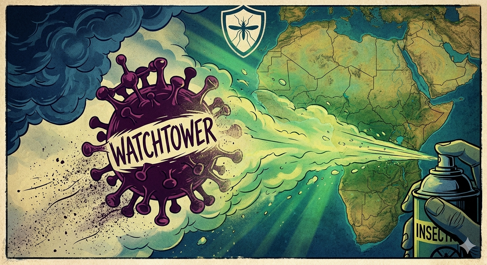
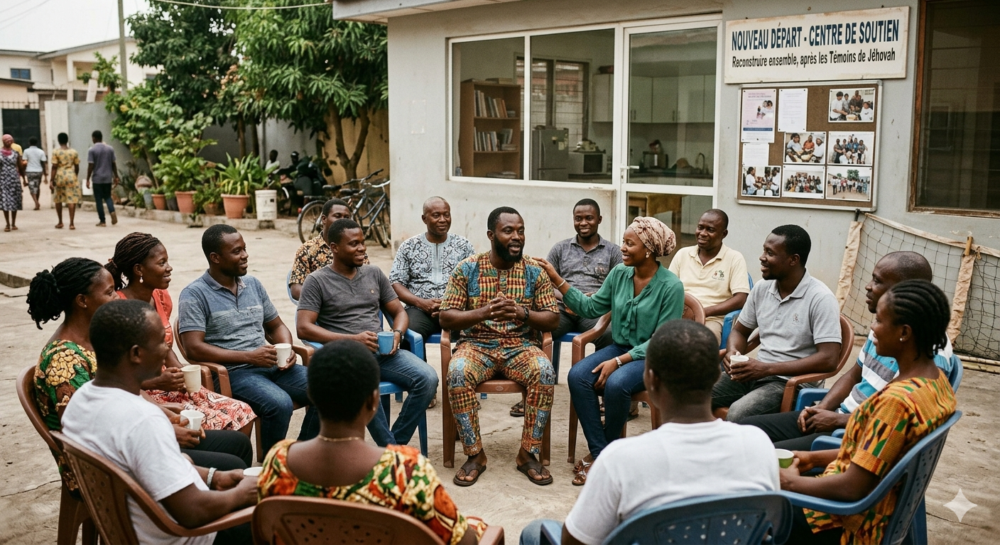
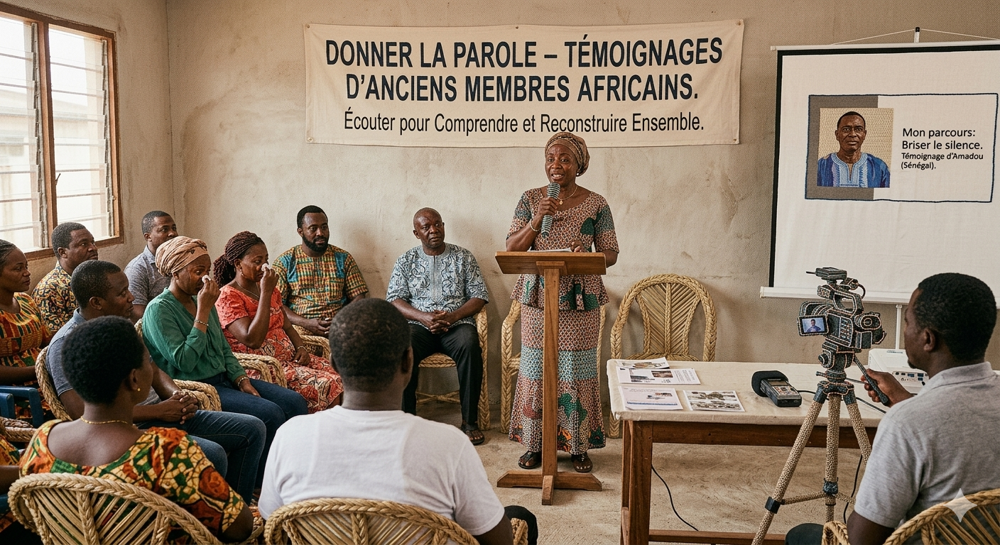

Analyser les doctrines et pratiques de cette organisation.
Aider ceux qui quittent ou veulent quitter cette organisation à reconstruire leur vie autour d'une nouvelle communauté.

Publier les témoignages d'anciens membres africains.

Partage ton témoignage et aide d'autres personnes.